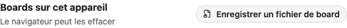
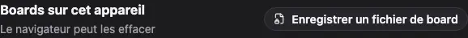

Garder ses boards
Le service ne garde rien: la copie de ton navigateur est parfois la seule. Voici comment la protéger.
1 Dans le profil, la ligne « Boards sur cet appareil » dit si le navigateur les conserve ou peut les effacer.
Le service ne garde rien: la copie de ton navigateur peut être la seule d'un board. Le profil indique si le navigateur a accepté de conserver tes boards sur cet appareil (protégés) ou s'il peut les effacer quand il manque de place ou après une longue absence. Tes brouillons privés sont chiffrés avec une clé propre à cet appareil et supprimés avec leur board.
Quand le navigateur peut effacer tes boards et que personne d'autre ne détient le tien, RetroBoard propose Enregistrer un fichier de board une seule fois pour ce board. Le fichier est chiffré et restaure le board plus tard, sur cet appareil ou un autre: garde-le en lieu sûr.

